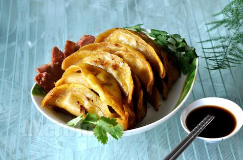

南京的饮食以京苏菜和清真菜著名。南京菜称为京苏大菜，又叫京苏菜、金陵菜，厨师则自称“京苏帮”，是苏菜的四大代表菜之一。金陵菜是指以南京为中心，一直延伸到江西九江的地方风味。金陵菜起源于先秦，隋唐已负盛名，至明清成流派。金陵菜原料多以水产为主，注重鲜活，刀功精细，善用炖、焖 、烤、煨等烹调方法，口味平和，鲜香酥嫩。菜品细致精美，格调高雅。金陵菜讲究刀工，擅长火功，富于变化的技法以及南北皆宜的口味特色。
南京小吃全国闻名，列中国四大小吃之首，主要的集中地有夫子庙、狮子桥、甘家大院等，刘长兴面馆是南京著名的面馆，百年老字号韩复兴是南京著名的盐水鸭、板鸭店。夫子庙的大石坝街和湖南路的狮子桥为著名的美食街，有很多特色小吃，如回味鸭血粉丝、狮王府狮子头、尹氏鸡汁汤包、莲湖糕团店、“忘不了”酸菜鱼、绿柳居等，此外南京还有秦淮八绝、小笼包、煮干丝、鸭血粉丝汤、如意回卤干、什锦豆腐涝、状元豆、盐水鸭、蒸饺、旺鸡蛋、臭豆腐、活珠子、南农烧鸡、糖芋苗等等风味小吃。
鸭血粉丝汤
在南京，卖鸭血粉丝汤的摊子星罗棋布，从路边的小吃摊，到成规模的连锁店。可以毫不夸张的说，没吃过南京的鸭血粉丝就等于没来过南京，最有名的要算是回味鸭血粉丝，除此之外，石记鸭血粉丝汤、金源鸭血粉丝、永和园鸭血粉丝汤、鸭得堡鸭血粉丝和金源鸭血粉丝都算是南京鸭血粉丝汤的名店。精明的摊主预先将鸭血煮熟，切成小块放在锅中，见有游客来，便捞出鸭血装在白瓷碗里，然后浇上一勺滚烫的鲜汤，滴上数滴香油，撒上一撮虾米和鸭肝鸭肠衣等，再点上一撮香菜。爱吃辣的客人，还可以再加上些辣椒油或胡椒，又香、又辣、可口的味。
鸭血粉丝名店：
回味鸭血粉丝（湖南路店）、石记鸭血粉丝汤、永和园、鸭得堡
金源鸭血粉丝：玄武区锁金村医院东，近南师大紫金校区，另有多家分店。
牛肉锅贴

外脆里嫩、馅足汁多、咸中带甜是南京牛肉锅贴的最大特色。因为汁多，老主顾都把吃汤包的用到了这锅贴上。第一口咬大了汁会漏；咬猛了汁会喷；咬太小又不过瘾。 一说锅贴，老南京都会脱口而出“七家湾”！上百年的经营，七家湾地区的几十家清真店老板已经将这个普通地名打造成了清真食品共有的大品牌。由于区划调整和拆迁，不少老字号的清真饮食店陆续搬离了原址，在其他地方“另起炉灶”。
盐水鸭
要问到南京最值得吃的是什么，十个南京人中十个会告诉你是盐水鸭，而一讲到南京菜，就必讲鸭，其实全国各地都会制作盐水鸭，为何南京的盐水鸭最好吃?鸭子质优是一个原因，另一个原因是南京的盐水鸭有着与众不同的制作过程。生活在山清水秀里的南京鸭子宰杀过以后，重量一般控制在三斤八两到四斤重，并且要求没有破损，没有瘀血，没有斑疖。之后制作步骤要求也很高，把热盐填入鸭腹并用热盐擦遍鸭身。制作过程必须遵守规定的时间，腌制两个小时然后要在百年的老卤中浸泡两小时，之后再经过挂，吹，卤等一系列工序。
很早以前的南京人吃的大多其实是板鸭，始于六朝的板鸭经过老卤腌制过以后做熟，吃起来紧密咸香，余味回甜。后人因条件限制，有的腌制复卤期变得更短，卤出来的鸭子肉质更细嫩一些，皮白肉嫩，而且现做现卖，现买现吃，这便成就了南京盐水鸭。所以买盐水鸭的时候要看日期，越新鲜的自然越好。
南京人的制鸭技术由来已久，除了盐水鸭之外，还有板鸭、金陵叉烤鸭、黄焖鸭、烧鸭、酱鸭、香酥鸭、茄汁鸭、松子鸭卷、八宝珍珠鸭等，再加上精心炮制的内脏、爪翅与鸭血，餐馆里推出全鸭席一点也不难。
代表店铺：可以毫不夸张地说，几乎南京每家餐厅都能吃到盐水鸭，其中以梅苑餐厅和清真韩复兴板鸭店（外卖）的最为有名。
赤豆元宵
赤豆元宵虽然哪里都有，但是南京土著却对这碗平常的赤豆元宵格外有感情，最有名的莫过于莲湖糕团店，这家店虽然名字叫糕团店，但最受欢迎的却是这莲子赤豆元宵，浓浓稠稠的一大碗，用红豆沙煮小元宵和莲子，再用藕粉勾芡，用“软糯香甜”形容真是当之无愧！所有进店的人，几乎都会先来碗赤豆元宵，然后再点些汤面，或者锅贴糕团。
桂花糖芋苗
桂花糖芋苗是南京一道出名的甜点，和"桂花蜜汁藕、梅花糕、赤豆酒酿小圆子”一同被誉为金陵南京四大最有人情味街头小食。光洁的芋苗口感润滑爽口、香甜酥软，汤汁呈酱红色鲜亮诱人，散发着浓郁的桂花香，吃后唇齿留香。
在旧时的老南京城中，常见小贩挑担走街穿巷叫卖于街头巷尾，每听到叫卖声，大人们便会拿个碗或小铝锅，馋嘴的小孩子跟着大人后面，看小贩如何娴熟地接锅（碗）、掀盖、取勺、下舀、入锅、接钱、找零，一丝不乱、一步不错，有时会看呆了。
推荐品尝地：桂花糖芋苗现在仍是南京大街小巷内的美食，一些甜食店甚至是路边小摊都可以看到他，南京的餐饮名店如南京大牌档、芳婆糕团店、莲湖糕团店内也少不了它。
鸡汁汤包
在南京，除了秦淮八绝之外，还有更好吃的——鸡汁汤包。一笼一般有6-8个汤包，揭开蒸笼，你会发现汤包皮闪着亮光，晶莹剔透，特别小巧可爱。汤包与一般包子相比，最大的特点就是皮薄馅多，吃时先在盘子里倒一些醋，然后轻轻地夹起包子，慢慢地提到嘴边，等包子冷却后再咬一个小口子，把里面的汤汁全部吸完。
推荐品尝地：在夫子庙、狮子桥等地的很多鸡汁汤包店中都可以吃到，比较有名的如尹氏鸡汁汤包、鸡鸣汤包店等。
鸭油酥烧饼

烧饼常人视烧饼为大路货，而南京的鸭油酥烧饼却不同凡响。这种用鸭油和制的酥烧饼，其选料、制作、火功、质量均很讲究，烧饼层次分明，入口又香又酥，余味久存。虽然每天上午应市不少，但购者仍需排队才能买到。是南京夫子庙的传统名点。
推荐品尝地：售卖鸭血粉丝汤的店内均有出售，如鸭得堡老鸭汤鸭血粉丝、回味鸭血粉丝等，除此之外，马祥兴菜馆、奇芳阁、韩复兴板鸭店也有销售。
皮肚面
皮肚面是南京独有的面，汤料充盈，酷似于大杂烩，十几样东西，皮肚、猪肝、香肠、肉丝、西红柿、鸡蛋、青菜、木耳……一锅烩。